ANALYSE DU CYCLE DE VIE (ACV) AGRAFEUSES
PRÉSENTATION
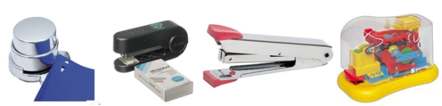
OBJECTIFS
- Comprendre la notion d'Unité Fonctionnelle ;
- Déterminer les consommations (énergie, consommables) correspondant à l'unité fonctionnelle ;
- Estimer des impacts environnementaux, renseigner une feuille de calcul, s'appuyer sur une base de données ;
- Comparer des produits d'un point de vue environnemental pour une même phase du cycle de vie.
MODALITÉS
- Durée: 12 heures
RESSOURCES
- Données relatives aux différentes agrafeuses :
- Lieu de fabrication ;
- Estimation de la durée de vie ;
- Consommables ;
- Fabrication ;
- Conditionnement ;
- Livraison ;
- Utilisation ;
- Fin de vie ;
- Arocédure d'utilisation de « Bilan Produit » ;
- Manuel de référence du logiciel « Bilan Produit ».
UNITÉ FONCTIONNELLE
Consulter la Mise en Situation et les Données relatives aux consommations des différentes agrafeuses :
MISE EN SITUATION
Les solutions d'agrafage
Un rapport affirme que l'agrafeuse sans agrafes « Green Emma » est plus impactante pour l'environnement que l'agrafeuse « Skrebba », qui nécessite pourtant l'usage d'agrafes.
Cette affirmation a mis la société productrice de l'agrafeuse Green Emma dans l'embarras, car le slogan pour cette entreprise est justement de réaliser des produit peu impactant.
De ce fait, la société vous demande d'étudier leur produit et d'envisager des pistes pour améliorer le bilan.
On souhaite réaliser une étude comparative d'impact environnemental concernant différentes solutions d'agrafage.
La fonction à réaliser est donc : « assembler des feuilles ».
On choisit quatre modèles différents.
- Le premier modèle est une agrafeuse sans agrafe : Green Emma (d'une durée de vie estimée à 1 000 agrafages).
- Le second modèle est une agrafeuse (majoritairement) en plastique : Skrebba (d'une durée de vie estimée à 2 000 agrafages).
- Le troisième modèle est une agrafeuse en acier : Regal (d'une durée de vie estimée à 6 000 agrafages).
- Le quatrième modèle est une agrafeuse électrique : Rexel (d'une durée de vie estimée à 10 000 agrafages).
Définition d'une unité fonctionnelle
Pour pouvoir comparer des produits, ils doivent être évalués pour un même service rendu appelé unité fonctionnelle (UF).
Toutes les consommations des produits étudiés devront donc être exprimées uniquement pour la réalisation de cette unité fonctionnelle.
On va définir une UF correspondant à l'ensemble du cycle de vie des produits étudiés.
Pour les produits étudiés elle peut par exemple être définie de la façon suivante :
UF = « agrafer des feuilles deux fois par jour, 5 jours par semaine, 47 semaines par an pendant 42 ans ».
DONNÉES DE CONSOMMATIONS DES AGRAFEUSES
GREEN EMMA
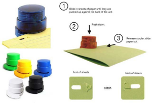
- Lieu de fabrication : Allemagne (Lahr).
- Estimation de la durée de vie : 1000 agrafages.
- Consommables : aucun,
- Fabrication : Masse des éléments (donnée par le fabricant et déjà saisie dans le logiciel)
- Conditionnement : Emballage : Carton rigide blanchi.
- Livraison : idem à l'agrafeuse Skrebba
- Fin de vie : ordures ménagères.
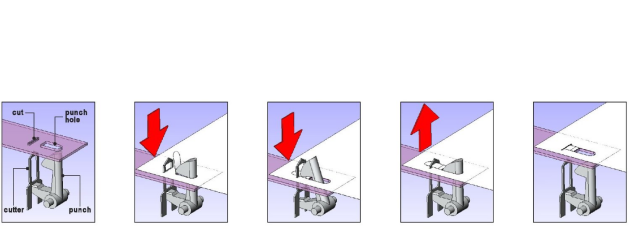
| En image | Description |
|---|---|
| 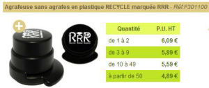 | AGRAFEUSE SANS AGRAFES en PLASTIQUE RECYCLE marquée RRR - Un système de génie pour fixer jusqu'à 4 feuilles de 80g entre elles sans agrafes. - Plus jamais en panne d'agrafes. - Un déchet de moins - Fini les agrafes dans la poubelle papier - Passe sans problème au destructeur de document |
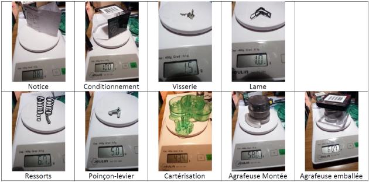
SKREBBA
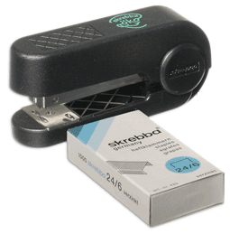
C'est une agrafeuse de bureau traditionnelle (avec cartérisation en plastique recyclé), fabriquée en Allemagne, d'une durée de vie estimée à 2000 agrafages.
Scénario d'utilisation
Agrafeuse utilisée dans un bureau par une personne travaillant à temps complet pendant toute sa carrière (40 ans). En moyenne cette personne utilise son agrafeuse deux fois par jour, pendant 45 semaines par an avec 5 jours de travail par semaine.
Caractéristiques
- Lieu de fabrication : Allemagne (Lahr).
- Estimation de la durée de vie : 2000 agrafages.
- Consommables : boîte de 1000 agrafes,
- Poids total (emballage inclus) : ≈ 92 g.
- Fabrication :
- Pièces métalliques (Socle, levier, guide ressort, matrice, guide levier, magasin à agrafes) : acier courant [emboutissage]
- Rivet (axe) : Alliage d'aluminium [Aluminium mix forgé européen]
- Ressorts (4 ressorts) : acier faiblement allié [laminage de profil acier].
- Pièces plastiques thermoplastiques : abs [injection].
- Conditionnement : Emballage : Carton rigide blanchi.
- Livraison :
- Site de production à entrepôt de logistique grande surface :
- Camion 16t : Allemagne (Lahr) – France (Limoges) : distance 927 km
- Entrepôt à magasin :
- Camion 3,5t : Limoges – Magasins : distance 23 km
- Site de production à entrepôt de logistique grande surface :
- Utilisation : L'agrafeuse Skrebba que nous étudions utilise des agrafes standard n°10.
- Boite de 1000 agrafes fabriquées en Chine : transport transocéanique par voie maritime Chine (Shanghai)-France (Marseille) : 16218 km, puis camion 16t : Marseille-Limoges ( 600 km) et enfin camionnette Diesel Limoges - Magasin (23 km).
- Les 1000 agrafes sont en acier de masse : 24.2g
- le carton de masse 2.3g
- Fin de vie : ordures ménagères.
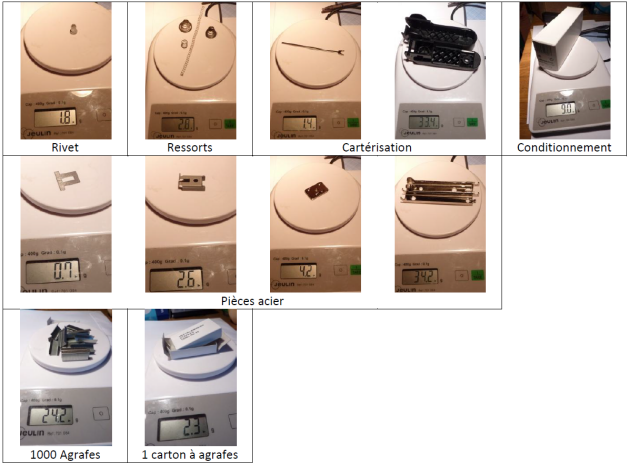
REGAL
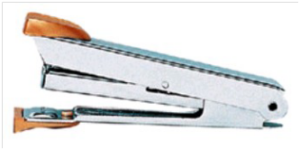
C'est une agrafeuse de bureau traditionnelle, fabriquée au Japon, d'une durée de vie estimée à 6000 agrafages.
Scénario d'utilisation
Agrafeuse utilisée dans un bureau par une personne travaillant à temps complet pendant toute sa carrière (40 ans). En moyenne cette personne utilise son agrafeuse deux fois par jour, pendant 45 semaines par an avec 5 jours de travail par semaine.
Caractéristiques
- Lieu de fabrication : Japon.
- Estimation de la durée de vie : 6000 agrafages.
- Consommables : boîte de 1000 agrafes,
- Poids total (emballage inclus) : ≈ 120 g.
- Fabrication : Son poids total est de 60g. Elle est composée d'acier plié, d'acier à ressort et de plastique injecté qui se répartissent dans différentes pièces :
- bâti : 50g (acier courant) embouti (prendre forgeage si l'emboutissage n'est pas dans la banque de données),
- ressorts (lame+spirale) : 8g (acier faiblement allié),
- embouts : 2g (matière plastique injectée en ABS)
- Conditionnement : Elle est conditionnée dans un blister individuel qui pèse 5g (PS thermo-formé).
- Livraison : la livraison se détaille comme suit :
- Producteur grossiste : Transocéanique JAPON–FRANCE distance 15000km
- Grossiste distributeur : camion 16t : Marseille-Limoges 600 km.
- Distributeur consommateur : camionnette Diesel 23 km.
- Utilisation : Les agrafes utilisées se vendent en boites de 1000 et sont en acier courant. 1 boîte pèse 50g répartis de la façon suivante : 45g pour les agrafes et 5g pour la boîte en carton.
- Boite de 1000 agrafes fabriquées en Chine : transport transocéanique par voie maritime Chine (Shanghai)-France (Marseille) : 16218 km, puis camion 16t : Marseille-Limoges ( 600 km) et enfin camionnette Diesel Limoges - Magasin (23 km).
- Les 1000 agrafes sont en acier de masse : 45g
- le carton de masse 5g
- Fin de vie : ordures ménagères.
REXEL
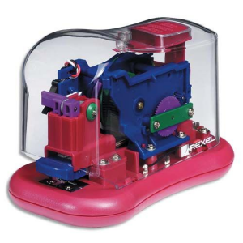
C'est une agrafeuse électrique de bureau, semi automatisée fabriquée en Allemagne, d'une durée de vie estimée à 10 000 agrafages.
Le fonctionnement ne nécessite qu'une seule main pour agrafer un paquet de feuilles.
L'agrafeuse est capable d'agrafer un paquet de 12 feuilles de papier de 80 g/m² ; l'énergie électrique qu'elle utilise est fournie par 4 piles 1,5 Volts du type "AA" (LR6, qui permettent de réaliser au moins 3000 agrafages).
Scénario d'utilisation
Agrafeuse utilisée dans un bureau par une personne travaillant à temps complet pendant toute sa carrière (40 ans). En moyenne cette personne utilise son agrafeuse deux fois par jour, pendant 45 semaines par an avec 5 jours de travail par semaine.
Caractéristiques
| En image | Description |
|---|---|
| 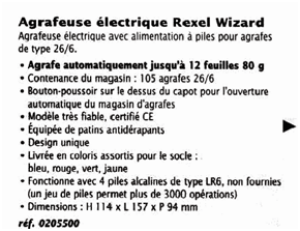 | Insertion des agrafes : Appuyez sur le bouton au-dessus de l'agrafeuse. Le canal à agrafes se dégagera. Tirez le canal vers l'avant pour insérer jusqu'à 105 agrafes standard. Repoussez doucement le canal à agrafes jusqu'au déclic de mise en place. Fonctionnement de l'agrafeuse : Pour faire fonctionner l'agrafeuse, insérer simplement le papier dans l'ouverture à l'avant de l'agrafeuse. Les documents sont agrafés automatiquement. Elle agrafera jusqu'à 12 feuilles de papier de 80 g / m². |
| Description | En image |
|---|---|
| Comment dégager les blocages : Au cas où votre agrafeuse se bloquerait, appuyez sur le bouton au-dessus du système pour dégager le canal à agrafes. Tirez le canal vers l'avant et enlevez les agrafes qui posent problème. Repoussez le canal à agrafe jusqu'au déclic de mise en place. Comment éviter les blocages : N'essayer pas d'agrafer plus de 12 feuilles de papier de 80 g/m². Assurez-vous que l'agrafeuse termine son cycle avant de retirer le papier de la tête de l'agrafeuse. Utilisez des piles alcalines de qualité. |
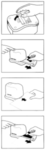 |
Chaîne d'énergie
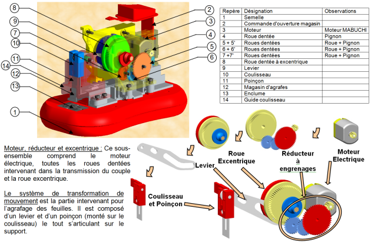
Alimener en énergie
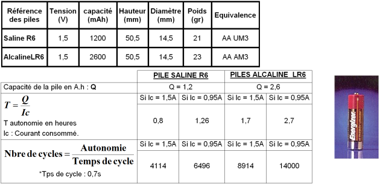
Caractéristiques moteur
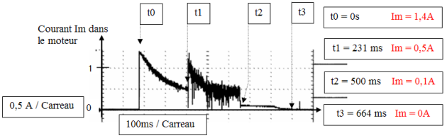
Question 1 :
Déterminer l'unité fonctionnelle pour chaque agrafeuse (compte tenu de la durée de vie propre à chaque agrafeuse), autrement dit le nombre d'agrafeuses nécessaires au cours d'une carrière.
UF = « agrafer des feuilles deux fois par jour, 5 jours par semaine, 42 semaines par an pendant 42 ans »